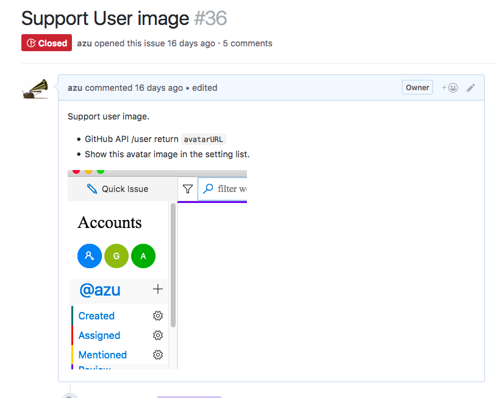
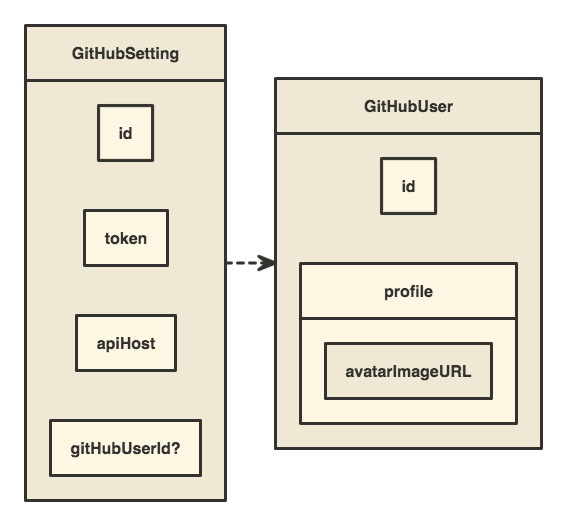
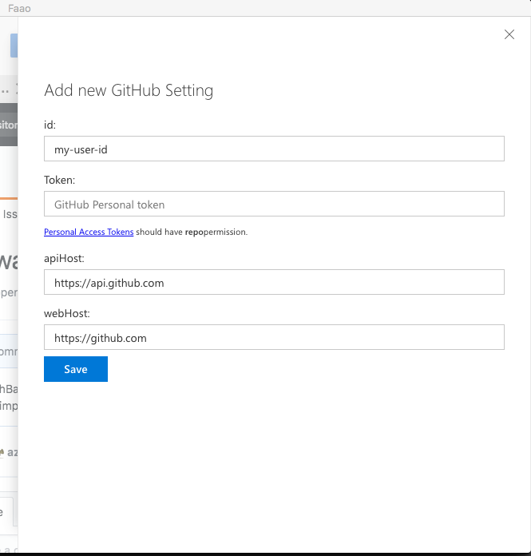
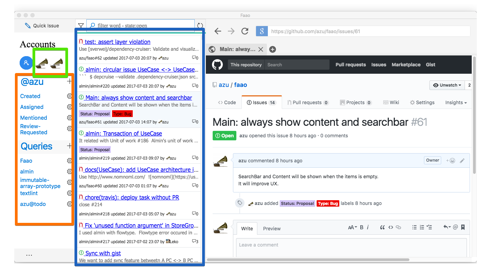
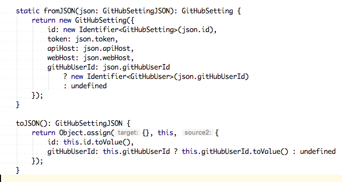
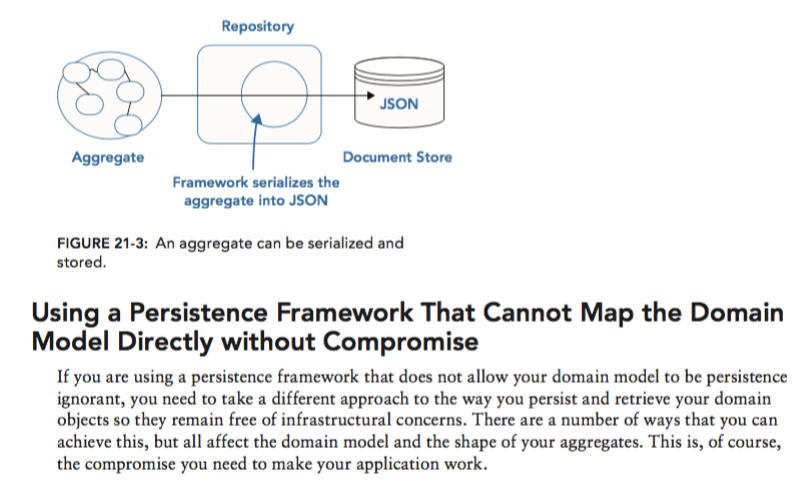
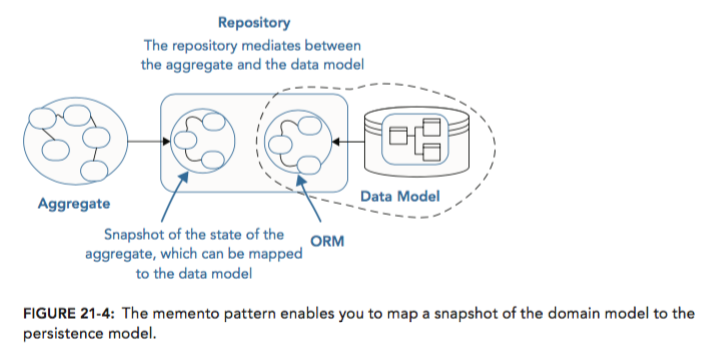
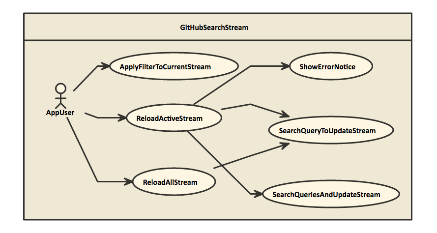
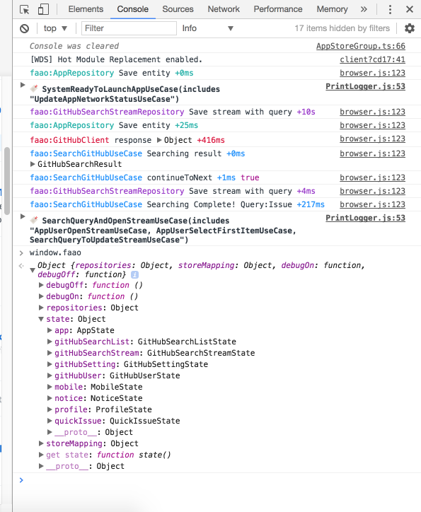

autoscale: true
Faao - ドメイン駆動設計で作るGitHub Issue Client -
自己紹介

- Name : azu
- Twitter : @azu_re
- Website: Web scratch, JSer.info
過去に作ったやつ
- azu/GithubReader: Github Notifications Client for OS X
- azu/github-reader: [node-webkit] GitHub client app - Viewer for Notifications and News Feed.
- azu/github-issue-teev: [NW.js] GitHub Issue Manager(Viewer)


Faao

Faao - Feature
- Support Modern browser/mobile/Electron(recommenced)
- Support GitHub.com and GitHub Enterprise(GHE)
- Search Issue/Pull Request
- [Search Syntax](https://help.github.com/articles/search-syntax/ "Search Syntax") is same with GitHub Search - Mixed the result of search
- e.g.) You can see the results of [Created](https://github.com/issues), [assigned](https://github.com/issues/assigned), [mentioned](https://github.com/issues/mentioned) as a single result - e.g.) You can see the results of `repo:azu/todo` on `github.com` and `repo:azu-ghe/todo` on GHE as a single result - Support GitHub User Activity
- Quick to create issue
- Import/Export profile data
目的
- OOSでGitHub Issueをちゃんと扱うものがない
- 技術的目的
- Almin + TypeScript + DDD^ドメイン駆動設計である程度の規模のアプリケーションを作りたかった
規模感(2017-07-03現在)
✈ cloc src
212 text files.
208 unique files.
4 files ignored.
github.com/AlDanial/cloc v 1.72 T=1.31 s (159.3 files/s, 12962.9 lines/s)
-------------------------------------------------------------------------------
Language files blank comment code
-------------------------------------------------------------------------------
TypeScript 165 859 478 8487
JSON 7 1 0 6189
CSS 34 120 60 728
Markdown 2 3 0 6
-------------------------------------------------------------------------------
SUM: 208 983 538 15410
-------------------------------------------------------------------------------
`
作戦
- 「ちゃんと考えてちゃんとやる」
- 技術的ショーケースとしての意味合いを持つ
- ちゃんとモデリングする
- ちゃんとテストを書く
- ちゃんとドキュメントを作る
DDD
ちゃんとモデリング[^モデル]をやる
[^モデル]: ここでいうモデルはEntityとかValue Objectを含めたドメイン上のモデルクラス
クライアントサイドDDD
- faao/domain.md at master · azu/faao
- ドメインモデルの寿命が長い
- 特にこういうクライアントアプリはずっと立ち上げっぱなし
- サーバ側の概念とクライアント側の概念は一致しないことがある
- サーバ(GitHub)的にアカウントに対してGitHub APIのトークンが複数紐づく
- クライアントからはTokenがあり、そのTokenに紐づくアカウントがいるように見える
- Tokenがなければアカウントは分からない、アカウントだけ分かってもトークンがないと何もできない
モデリング
- AppUser: アプリケーションのユーザー
- GitHubSetting: TokenやAPI hostなどを含んだセッション情報
- GitHubUser: GitHubのAPIを叩いた結果取得できるGitHubユーザー情報
多くの処理(ユースケース)は
AppUserがGitHubSettingを使って 〜〜 する
のようになることが分かってくる
遠回りのモデリング
- 実際モデリングをしっかりやると進みが遅く感じる
- 一つのモデルが大きくなりすぎないように気を配ったり
- 遠回りしてよかった場合もある
- 安易なUI起因の値がドメインに流れてくるのを防げる
遠回りの例

- GitHubSetting(Account)にアイコン画像を設定したいというIssue
- 安直にやるなら
GitHubSettingへavatarImageURLなどを追加すれば終わり
interface GitHubSetting {
id: Identifier<GitHubSetting>;
token: string;
apiHost: string;
webHost: string;
// ADD?
avatarImageURL?: string;
}
遠回りの例 -> GitHubUser

- 後回しにしていて、GitHubUserのActivityを表示したいと思った
- このときに、
GitHubUserというモデルが必要で、avatarImageURLはこのGitHubUserのprofileに属するデータであると分かった - 結果的に
GitHubSettingに追加されたのはGitHubUserへのRelationship Id
interface GitHubSetting {
id: Identifier<GitHubSetting>;
token: string;
apiHost: string;
webHost: string;
// Relationship
gitHubUserId?: Identifier<GitHubUser>;
}
^
遠回りのモデリング

GitHubSettingとGitHubUserは想定するライフサイクルが異なったGitHubSettingで入力されたTokenを使って、/userAPIを叩いてGitHubUserを作る- 異なるライフサイクルを一つのモデルにまとめると破綻する未来が見えていた
- そのため、UIのためにいきなりモデルを変更するよりちゃんと必要なモデルを考える
ドメインモデル -> 永続化
Hard repository
このアプリの永続化してる部分

永続化
- 検索履歴
- 検索クエリ
- 設定
- アクティビティ
- etc....
- 大体のモデルが永続化可能な形になってる
[fit] 永続化はRepositoryの仕事だけど

- モデルのシリアライズ/デシリアライズの定義をするのは誰?
static fromJSONとtoJSONという安易な実装をモデルに生やしてる- もっといい方法が欲しい(Decoratorはパス)
[fit] ドメインモデルは永続化(技術的制約)を知らずに済むか
Patterns, Principles, and Practices of Domain-Driven Designより
- 妥協なしで行う
- NHibernate^読やEntity Frameworkなどのデータモデルとのマッピングできるものを使う
- モデルをそのままJSONなどにシリアライズして保存できるデータストアを使う
- 妥協ありで行う
- リポジトリからデータを引くときに、Entityに対して外から値を指しながら復元させる
- Mementoパターン - Entityのスナップショットとデータモデルをマッピング(今これ)

^ マッピングできるタイプ

^ JSONをそのまま保存できるもの + 妥協あり(ドメインが知っている)

^ Mementoパターンでのスナップショット
妥協あり/なしの永続化
- ドメインは軽く永続化されることを意識する必要はある
- constructorでincrement idをしていると不整合を生むので駄目
- constructorでちゃんと
{ id }なども受け取れるようにする - モデルの初期化は面倒になっていくのでFactoryが初期化を担当する
- constructorでちゃんと
// 駄目なケース
let id = 0;
class User {
constructor(){
this.id = id++
}
}
どちらにしてもドメインは軽くは永続化を意識する
{id}をconstructorで受け取れるようにする- 永続化を考える場合は、constructor(初期化)に副作用を持たせてはいけない
// OKなケース
class User {
constructor({ id }){
this.id = id;
}
}
スナップショットからの復元
- 今採用してるパターン
- 妥協ありパターンの一種であるTypeScript: Working with JSON · Choly's Blog(Entityに対して外から値を指しながら復元させる)に比べると少し安全で何とか手で書いていけるレベル
- しかしスナップショットが現在のモデルと一致してるとは限らない
- スナップショットのバージョニングなどが必要となっていく
- フレームワークになってないとそろそろ面倒
Repository
- インメモリで終わる or データが常にサーバにある場合のRepositoryは単純なMap
- モデルの永続化を考えだしたときに大変になるのは、Repository
- モデルも永続化は全く意識はしてない場合、後から概念/構造に変更が出て大変となる
- 影響度: 概念 > 構造 > 実装...
- ついでに永続化するとIndexedDBなどを使うの非同期処理がやってくる
- Faaoの実装では初期化と保存のみを非同期にして、Readは同期にした
- Readを非同期にするとStoreも非同期にする必要がでてきて面倒そうだった
UseCase
UseCase
- アプリケーションのドメインを使った、やりたいことの流れを書くところ
- このアプリのユースケースは
- GitHubSettingのtoken情報とGitHub APIを使って検索
- GitHubSettingの作成、保存 などなど
- ユースケースの再利用性
- 基本的にはしない、拡張ユースケースは使う
- UseCaseの再利用性 - yoskhdia’s diary
ユースケース図
- Faaoのユースケース: Faao - UseCase architecture
- このユースケース図はアプリの全てを表すわけではないけどモデルの整合性の参考にできる
一点、注意が必要なのは、ユースケース記述とユースケース図は異なるということです。 このガイドラインはユースケース記述のガイドラインです。 UseCaseの再利用性 - yoskhdia’s diary
Living Documentation

- Living Documentation by design, with Domain-Driven Design
- https://leanpub.com/livingdocumentation $0〜$40で購入
知識の共有
KnowledgeにはGenericなものとSpecificなものがある。 会社やチーム、プロダクトにおけるSpecificな知識には次のような問題が生まれやすい
- アクセスできない
- 古すぎる
- フラグメント化してる
- 暗黙的になってる
- 理解できない
- 書かれてない
Living Documentation
- これらの問題をLivingなドキュメントで解決するアプローチ
- ドキュメントもコードと同じ速度で成長する
- 良いドキュメントには良い設計が必要
- 良いドキュメントには自動化が必要
- 推測、憶測をドキュメント化しない
#LivingDocumentationのコア原則
- Reliable - 信頼性の高いドキュメント
- single source of truth
- reconciliation mechanism
- ソースが複数の場所にあることを認め、それをテストする
- Low-Effort
- Collaborative
- Conversations over Documentations
- アクセスできる場所に知識は置く
- Insightful
- 意図を残す
具体的な問題と対策
- ガイドラインを決めてもそれを自動で守れないと意味がない
- ツールで検証する
- コードで検証する
- 更新されない構成図
- Living Diagram
- 更新されないユビキタス言語
- etc..
Living Documentationの4つのステップ
- 何処かに保存されたデータの範囲を選択
- データをドキュメントの目的に沿ってフィルター
- フィルターした結果、各データのサブセットを抽出
- ドキュメントを生成するためのフォーマットへ変換
例
- ユースケース図の自動生成
- レイヤーのバイオレーション検知
- Lint
- メタテスト
守られないルールは価値がない
守られないルールは価値がない
- 最も良いドキュメントはno document
- 必要となった時(ツールがエラーと言った時)に初めて見ることができればいい
- ESLintがよくできている理由
- eslint, prettier, stylelint, webpack(case-sensitive-paths-webpack-plugin)などなど
[fit] 例) ルール: ドメインはインフラ(repository)を参照してはいけない
dependency-cruiserを使ってルールをコード化し自動チェックする
{
"forbidden": [
{
"name": "domain-not-to-depend-on-infra",
"comment": "Don't allow dependencies from domain to infra",
"severity": "error",
"from": { "path": "^src/domain" },
"to": { "path": "^src/infra" }
}
}
破れないルールは価値を鈍化させる
破れないルールは価値を鈍化させる
- ルールには例外がつきもの
- そのため、原則が守れないと崩壊してしまうルールよりは、例外を規定することで原則を守れるルールの方がよい。
- 厳密に守りたいルールは、ホワイトリストで例外ルールを管理できた方がいい
- 例)
eslint-disableで指定した部分だけ原則を無視できるようにする
- 例)
Living Documentation
Living Diagram
ユースケース図のLiving Diagram

- Faao - UseCase architecture に全てのユースケース図が自動生成される
- Faaoのソースコードから自動生成
- ファイルからuse-caseを抽出、Text to UMLのnomnomlが食べられる書式にして変換
- alminのUseCaseは拡張ユースケースを表現できる
- ユースケースが別のユースケースを呼び出す
- UseCaseの再利用性 - yoskhdia’s diary
Living Diagramの使いみち
- おかしなアクターを見つけることができる
- 「名詞（主語） - 動詞 - 名詞（目的語）」(en)
- 誰? がおかしいときがある。システムである場合など
- おかしなユースケースを見つけることができる
- 例外処理が抜けているかを見ることができる
- ユースケースは処理の流れを書く
- そのため、省かれた処理を見つけ適切にキャッチすると多くのバグが解決できる
2/3のバグはカバレッジを上げると見つかる
- 適切なエラーハンドリングが行われるか、例外を無視してないかをテストしていくことで、全体の2/3のバグが発見できる(データ集約型分散システムの論文)
A majority of the production failures (77%) can be reproduced by a unit test. -- Simple testing can prevent most critical failures | the morning paper
[fit] Living Documentationはドキュメンテーションをコード化する
- Living Documentationとはドキュメントがコードと共に成長できるようにする戦略
詳しくは本を読んで
- Living Documentation by… by Cyrille Martraire [PDF/iPad/Kindle]
- Living Documentation by design, with Domain-Driven Designを読んだ | Web Scratch
Almin

Almin
- TypeScriptで書き直した
- Alminはフレームワークだが、今回のドメインやRepositoryは自分で書くところなので手出しはしない
- あくまで思考を手助けする(そういう風にかけるというドキュメントがある)

ぼくのかんがえたさいきょうのうぇぶあぷりけーしょんふれーむわーく - YAPC Asia 2011
TypeScript
- まあ普通
- ツールのエコシステムに問題があったけどBabylon@7.0.0-beta.16でTypeScriptのパースができるようになった
Jest
- TypeScriptとの使い勝手がいいテストフレームワーク
- ts-jestがよく出来てる
- TypeScript -> js -> babelなどもできる
- Assertion
- expect 今回こっち
- assert 後から気づいたけど普通にassertでもかける
- power-assertもbabel変換とかでできる
Jest
- mock
- AutoMockはいらない
- Painfulな機能
Jest色々
- CLIは良く出来てる
- 機能が多すぎる
- デフォルトでJSDomが入ってるのでNodeでも
windowがデフォルトで存在"testEnvironment": "node"で回避- I found
windowisglobalin jest from StackOverflow, but not mention in docs? · Issue #3692 · facebook/jest
- 感想: Javascript unit testing tools
- Mochaはライブラリ向け、Jestはアプリ向け
メタテスト
- azu/large-scale-javascript: 複雑なJavaScriptアプリケーションを作るために考えること
- 特定のクラスやディレクトリに対してルールを守ってるかのテスト
- StoreがちゃんとStoreGroupに登録されてるか、初期Stateを返せてるかなど
- コードを書くと勝手にテストが増えて便利 :star:
Work on everything
Faaoの対応環境
- Browser
- Mobile(iOS Safari)
- Electron
- 最初はElectron向けに書いていたけど、これどこでも動くなと気づいてスイッチした
GitHub API
- octokat.jsを使ってる
- 0.9 Fetch APIベースになって壊れてる
- スキーマからAPIの対応を自動生成してるクライアント
- GitHubのdesktopも使ってたが
- TypeScriptから扱いやすいやつ欲しい
- レスポンスの型が面倒
GraphQL
- GraphQLはGitHub Enterprise 2.10にも入った
/users/:user/eventに相当するもののとり方がわからない- https://developer.github.com/v3/activity/events/#list-public-events-performed-by-a-user
GitHub API trap
- GHEだとRate Limitの機能が無効化されてるケースがある
- 常に404を返す
- どう見ても叩いたら壊れる
- GitHubのURLをパースするやつ
- github-url-to-objectを利用
- GHEも対応してる
- GitHubのeventsをフォーマットするやつ
- ダッシュボードの "pivotal-brian-croom opened issue on pivotal/cedar" みたいなメッセージを作るやつ
- parse-github-eventを書いた
Philosophy
Debuggablity - 状態
- アプリケーションには様々な状態が存在する
- 全てはどこからでも現在の状態を見れるようになってないと不便
- 簡単に
window.faaoに参照突き刺しておけばいい
- 簡単に
- Repository
- Store/State
- ViewのState
Debuggablity - データ
- 永続化したデータはいつでもメモリデータベースに切り替えできた方が良い
- テストの度に永続化したデータが消えるとテストしにくい
- FaaoではStorage.tsでいつでもメモリデータモードに入ることができる
- localForageを使って動的にdriverを切り返す
- データは元からメモリ上に載っていて、書き込み時にデータベースへアクセスする作りにしたため
Debuggability - イベント

- Stateとイベントを見比べる
- almin-loggerやalmin-devtoolsでUseCaseの実行を確認する
- イベントを見ることは大事
- Webの世界はイベント駆動
- DOMには色々なイベントがそれはブラウザによっても違う
- video-events-debugger
まとめ
- ちゃんとやるにはちゃんとやる必要がある
- コードと共にテストやドキュメントも成長する
- それらは自動化されている部分もあればルール化されている部分もある
- モデリングをちゃんと行い、モデルから自動的にドキュメントが生成され、ドキュメントとしてみた時のモデルとしての不整合を検証する